VISAN User Manual
This document describes the graphical components of VISAN, such as the main window and the plot windows. We also explain the basic functionality of VISAN that you will need to be familiar with in order to successfully use the application.
Contents
Starting VISAN
Depending on the platform you use, you should do the following to start VISAN:
- Windows : just launch VISAN from the Start Menu.
- macOS : start the VISAN application.
- Linux : if you have put VISAN in your
PATHenvironment variable just runvisanfrom your command prompt:Otherwise launch VISAN by providing a full path to the visan application (i.e. run$ visan
<visaninstalldir>/bin/visan).
For example, if you have installed VISAN in~/visanyou can run$ ~/visan/bin/visan
Main Window
When VISAN has fully started you will be presented with the Main Window of VISAN. The Main Window consists of a command input area.
![[screenshot]](images/visan-main.png)
VISAN main window
Command Interpreter
The command input area is where you tell VISAN what it should do. The language in which you provide these commands is the Python language. In fact, the command interpreter of VISAN behaves largely the same as a conventional Python interpreter. So if you are already familiar with Python you should feel right at home in VISAN.
If you are new to Python then it might be a good idea to take a look at the Python documentation. After that, you may want to learn more about the specific functions you can use to import product data, manipulate data and create plots. Several pointers to places where you can find more information about these specific commands are given in the list below:
- Python documentation: information about the command line language in general and information about many of the common functions.
- Numpy documentation: the Numpy package adds a broad range of mathematical functions to Python. The Numpy documentation also explains the properties of the special Numpy array data type that is used throughout VISAN.
- CODA Python documentation: an overview of the functions that are available in VISAN for CODA.
- HARP Python documentation: an overview of the functions that are available in VISAN for HARP.
- VISAN Reference Manual: an overview of all VISAN-specific functions. This includes functions to create plots as well as several mathematical functions.
Normally, if you want to use a certain package in Python you must use the 'import' command in order to make the package available. In VISAN, a number of packages are already pre-imported for you, so you can immediately start using them. In addition, the Numpy package and all VISAN specific functions are imported into the global namespace (similar to a 'from <package> import *' command), which means you can just use 'cos' instead of having to use 'numpy.cos' to call the cosine function from the Numpy package.
The command input area also comes with a set of keyboard navigation commands that you can use. In the following table an overview of these keyboard commands is provided:
| key binding | description |
|---|---|
| Home | Go to the beginning of the command or line. |
| Shift+Home | Select to the beginning of the command or line. |
| Shift+End | Select to the end of the line. |
| End | Go to the end of the line. |
| Ctrl+a | Select all. |
| Ctrl+c | Copy selected text, removing prompts. |
| Ctrl+Shift+c | Copy selected text, retaining prompts. |
| Ctrl+x | Cut selected text, removing prompts. |
| Ctrl+v | Paste from clipboard. |
| Ctrl+z | Undo last action. |
| Ctrl+y | Redo last action. |
| Ctrl+Shift+v | Paste and run multiple commands from clipboard. |
| Ctrl+Up Arrow | Retrieve Previous History item. |
| Alt+P | Retrieve Previous History item. |
| Ctrl+Down Arrow | Retrieve Next History item. |
| Alt+N | Retrieve Next History item. |
| Shift+Up Arrow | Insert Previous History item. |
| Shift+Down Arrow | Insert Next History item. |
| F8 | Command-completion of History item. (Type a few characters of a previous command and press F8.) |
| Ctrl+Enter | Insert new line into mutiline command. |
| Ctrl+] | Increase font size. |
| Ctrl+[ | Decrease font size. |
| Ctrl+= | Default font size. |
Some of these commands, such as cut, copy and paste can also be accessed via the 'Edit' menu in the Main Window's menu bar, or from the pop-up menu that appears if you click and hold the right mouse button anywhere in the Command Line Area.
The command interperter window can be accessed programmatically using the available shell object. For instance, to clear the interpreter window run the shell.clear() command.
Executing Scripts
It is possible to run almost any Python script file from within VISAN. If you choose the 'Load and Execute Script...' option from the 'File' menu, you will be able to select a Python script file (such files by convention have a '.py' extension) and run it. This code will be executed as if you had typed it in the Main Window. This also means that definitions that are made at the top level in your script will stay within the global namespace and can be used from the Command Interpreter after the script has finished.
When you run a script from the menu, VISAN will call the executescript function. This VISAN specific function will automatically add the location of your script to the module searchpath (sys.path). This means that if your script uses modules that are located in the same directory as the script file then these modules will automatically be found. When the script is finished the executescript function will change the module searchpath back to its original value.
On Linux you can also have VISAN execute a script when it starts up. Simply provide the script as an argument when you start VISAN from the command prompt. For example:
$ visan myscript.py
Import data using HARP
In the File menu there is a 'Harp Import...' option that will provide a dialog to easily construct the python command to perform a HARP import on a product. In the dialog you select the data file that you want to import, provide optional action and/or ingestion option parameter strings, and provide the target variable as you want to have it returned in the workspace. When you then select 'Import' the appropriate harp.import_product() command will be pasted and executed in the Main Window.
The 'operations' and 'options' parameters should be provided in the same format as needed for the harp.import_product() function.
The set of possible operations can be found in the Operations section of the HARP documentation.
Ingestion options are only applicable when importing a product that is not already in HARP format. The set of options will depend on the type of product that you ingest. They are described as 'ingestion options' in the HARP Ingestion definitions documentation.
History Logging
VISAN automatically keeps a history of all commands you enter in the Main Window. If you choose the 'Show Log' option from the 'File' menu you can see exactly which commands you entered during your VISAN session. These commands are the same as those available when you use the 'Ctrl+Up Arrow' and 'Ctrl+Down Arrow' keyboard shortcuts in the Command Line Area to navigate your command history. Via the 'Save Log to script...' menu option you can save your whole VISAN session to a Python script file on disk. You can then edit this file afterwards and turn it into a proper script file that you can execute again (see Executing Scripts).
You can also record just a few commands by first clearing your history log via the 'Clear Log' menu option, then running your commands, and finally saving this with 'Save Log to script...'.
Accessing Documentation
You can access the VISAN HTML Documentation via the 'Help' menu of the Main Window. If you choose one of the documentation links from this menu, the default web browser on your platform will be launched, and a window showing the requested documentation will be opened. On Linux this option may not always work properly with some browsers. If a browser window fails to appear when you select a documentation option from the 'Help' menu, you can also manually open the documentation from your web browser. To view the main documentation page open the file 'doc/html/index.html' which should be located in your VISAN installation directory.
Exiting VISAN
There are several ways to exit VISAN. Each of the following options will have the same effect: choosing 'Exit' from the 'File' menu in the Main Window (or 'Quit VISAN' from the application menu for macOS), closing the Main Window, or giving an 'exit' or 'quit' command to the Command Interpreter.
Product Browser
VISAN includes a product browser that allows you to easilly inspect the structure and contents of product files. Simply choose the 'Browse Product' option from the 'File' menu or use the 'Ctrl+B' shortcut ('Cmd-B' on macOS). This will present you with a file selection dialog. Just select a file and if the product file is supported by CODA a new browser window will appear for this product.
Mind that all files that are shown in the product browser are shown using the CODA interface. This means that the product browser will be able to show you the contents of HDF4, HDF5, netCDF, and XML files, but the way it is shown may not be the same as a dedicated HDF or XML viewer would show you. More information about the mapping that CODA uses for HDF and XML files can be found in the CODA documentation.
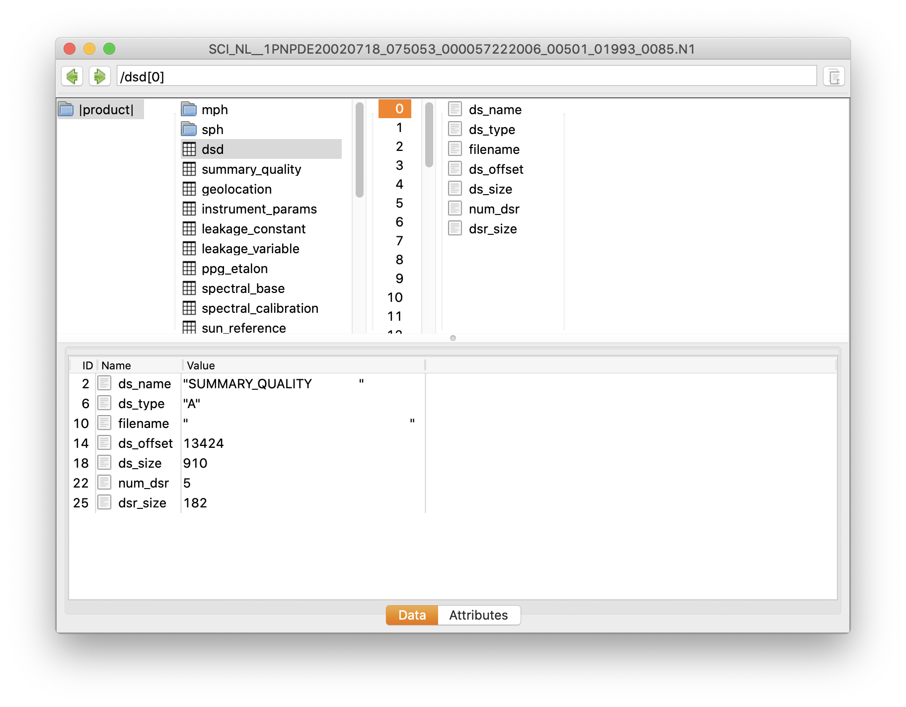The product browser window
The product browser window consists of three main sections. At the top there is the path view, which is a small area where you can inspect and set, using a text string, the path to the selected item in the product file. Below that we have the navigation panel that is used to navigate through the product. And finally, at the bottom there is the data and attribute inspection panel that will show specific information for the currently selected data item.
Navigation Panel
The navigation section consists of one or more vertical columns. The first column (the one on the left) contains the root of the product. It will always contain a single item called |product|. Each column to the right of this column brings you one step deeper into the hierarchy of the product. A column will show the contents of either a record or an array (i.e. it will only show the contents of compound types). When you select an item that represents an array or a record then the contents of the selected array/record will be shown in a newly created column to the right of the current column.
If a column represents a record you will see a list of the field names for the fields in the record together with icons indicating whether a field points to e.g. another record, an array, unavailable data, a geolocation value, etc. Depending on a global option (that can be set in the Preferences panel) record fields that either have the hidden property or that are not available can be included or excluded from the list of fields. If they are included, hidden fields will be shown in italic and unvailable fields will be show using a greyed-out field name (if a field points to an empty array the field name will always be show using a greyed-out field name, independent of the global preference setting).
A column representing an array will contain a list of all array indices. If the array is multi-dimensional you will see each multi-dimensional index as a comma-separated list.
Inspection Panel
When you select an item in one of the columns of the navigation panel the inspection panel at the bottom will show you the data contents and attributes for this selected element. The type of the selected item determines how the data will be presented. If the selected item is a record you will see a table containing an overview of the field names together with the value for each of the fields. If it is a (multi-dimensional) array of a basic type you will see a grid table showing the contents of the array. If the array contains more than two dimensions you will see a set of dimension selectors at the bottom of the table. For each dimension there will be a number input field and a set of row/col buttons. If you press the row or col button for a dimension this dimension will be used for the row respectively column axis of the table. For dimensions that are not displayed along the row or column axis you can use the number input field to select the index along which the multidimensional array should be sliced to produce the 2D array that is shown in the table.
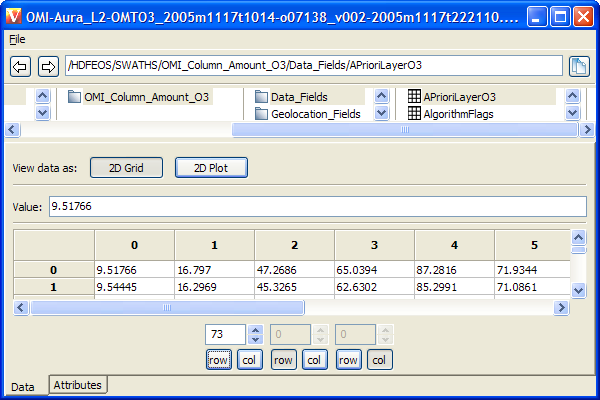Data display of a 3-dimensional data array
When the data is an array you will also see buttons at the top that allow you to switch between '2D Grid' and 'XY Plot' viewing mode. If you switch to 'XY Plot' mode you will get a XY plot of the data. Just as for the 2D Grid view you will receive a set of index selection fields and buttons at the bottom if the multi-dimensional array contains more than (in this case) one dimension. Since the XY Plot presents a 1D slice of the multi-dimensional data (whereas the 2D Grid showed a 2D slice) you will only have one 'select' button per dimension. The selected dimension is the one that will be used for the x-axis of the plot. The plot in the product browser window has the same interaction options as a normal VISAN Plot Window. You can read more about these options in the Plot Window section below.
If you select the 'Attributes' tab at the bottom of the inspection panel you will see all attributes that are available for the selected item. You will always see the attributes that were retrieved from the data dictionary. These attributes include data type, description and unit (if available), dimensions, number of elements and base type (for arrays), and/or number of fields (for records).
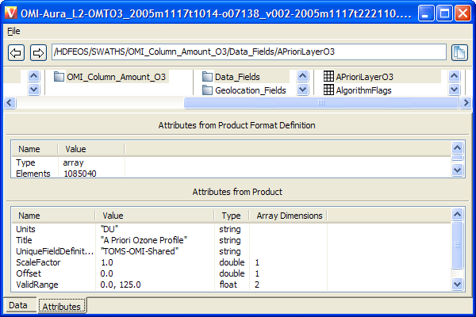Attributes for a HDF5 Scientific Data Set
If there are also attributes available in the product itself for the selected item (as can be the case for HDF and XML files) then you will see a second table below the data dictionary attributes showing the list of attributes that were retrieved from the product file (these product attributes are indentical to the list of attributes you would get when you would use the coda.get_attributes function).
Path View
The text field at the top of the product browser will show the path to the location of the currently selected item in the navigation panel. You can modify the contents of this field and manually enter a path to an item in the product. After you hit enter, the navigation panel will expand according to the path you entered and the data/attributes for the selected item will be shown in the inspection panel. A path can also be drag-'n-dropped onto the product browser from other applications.
To the left of the path view are two buttons that allow you to move the selection in the navigation panel one level deeper or one level higher. When you press the left arrow the selection will move to the parent of the currently selected item (i.e. the item in the column to the left of the currently selected item) and if you press the right arrow the selection will move to the (previously selected) item in the column to the right of the currently selected item.
The button to the right of the path view can be used to copy the path to the currently selected item. The contents of the clipboard will contain the path as a set of parameters that can be used for functions such as the coda.fetch function. For instance, if the current path is dataset[4].fieldname then a copy using the copy button will put the string "dataset", 4, "fieldname" on the clipboard.
Plot Window
VISAN opens a plot window when a plot() or histogramplot() function call is executed from the Command Line Interpreter or from a script. For example:
>>> plot([2,3,5,8])
will result in:
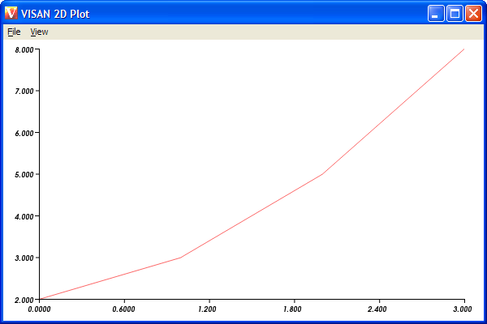A simple 2D plot
Each plot() function call causes VISAN to plot a two-dimensional dataset, supplied in parameters to plot(). By default, every plot() call opens a new plot window, but it is also possible to add multiple datasets to the same plot window. For example:
>>> w = plot([2,3,5,8]) >>> plot([11, 3, 11, 3], window=w) >>> plot([8, 7, 5, 2], window=w)
results in:
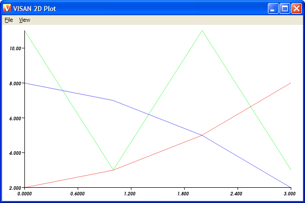Multiple plots in one window
Detailed information about the plot() command and all its parameters is available in the VISAN Reference Manual entry for plot().
A plot window contains a menu bar, a plot panel, an optional animation toolbar, and an optional property panel (consisting of 'Data Sets' and 'Plot' tab panes).
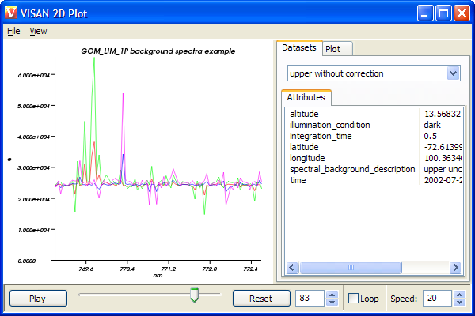A plot window with all panels showing
Plot Interaction
The plot panel area is subdivided into the X axis area, the Y axis area, and the plot area:
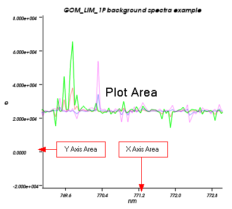The areas of the plot panel
If the plot panel is selected (you can select a plot panel by clicking in it with the mouse) you will be able to use mouse actions and key presses to interact with the plot.
The following mouse actions are recognized:
| mouse action | location | function | description |
|---|---|---|---|
| left button click-and-drag | plot area | pan | Move the viewport. |
| left button click-and-drag | axis area | constrained pan | Move the viewport, but only along the axis in question. |
| right button click-and-drag | plot area | zoom | Zoom in or out, depending on the direction of the mouse movement. |
| right button click-and-drag | axis area | constrained zoom | Zoom in or out, but only in the direction of the axis in question. |
| middle button click-and-drag | plot area | outline zoom | Select a rectangular area and upon mouse button release zoom in on that rectangle. |
And the following key presses are supported (some of the bindings behave differently according to where the mouse cursor was located at the time the key was pressed; this is indicated in the location column):
| key binding | location | function | description |
|---|---|---|---|
| r/R | anywhere | range reset | Reset the pan and zoom values to the current fallback range (see Plot Properties). |
| a | plot area | outer tick adjust | Zoom out a bit such that the ranges for the axis start and end with 'nice' values (i.e. values that are used for the axis labels). |
| a | axis area | constrained outer tick adjust | As for outer tick adjust, but only adjust the axis in question. |
| A | plot area | inner tick adjust | Zoom in a bit such that the ranges for the axis start and end with 'nice' values (i.e. values that are used for the axis labels). |
| A | axis area | constrained inner tick adjust | As for inner tick adjust, but only adjust the axis in question. |
| l/L | axis area | logarithmic axis | Adjust the axis in question to a logarithmic scale. This key will have no effect if the current range for this axis contains values <= 0. |
| space | anywhere | start/stop animation | For an animation plot, this will start or stop the animation along the frame dimension. |
Animation Plots
In general, a plot window will simply show a set of y values displayed against a set of x values. In VISAN it is also possible to create animation plots, in which the dataset contains multiple 2D-plots (signifying, for instance, samples along a time dimension). It is then possible to have the plot window animate the plot by showing the different frames in succession.
An animation plot is created when a plot() command is supplied with a two-dimensional dataset. The first dimension will be used as the frame dimension.
For example:
>>> a = numpy.array([1,2,4,5,3,2,2,3,5,4,2,1]) >>> a.shape = [3,4] >>> print a [[1 2 4 5] [3 2 3 2] [5 4 2 1]] >>> plot(a)
will yield a three-frame animation plot:
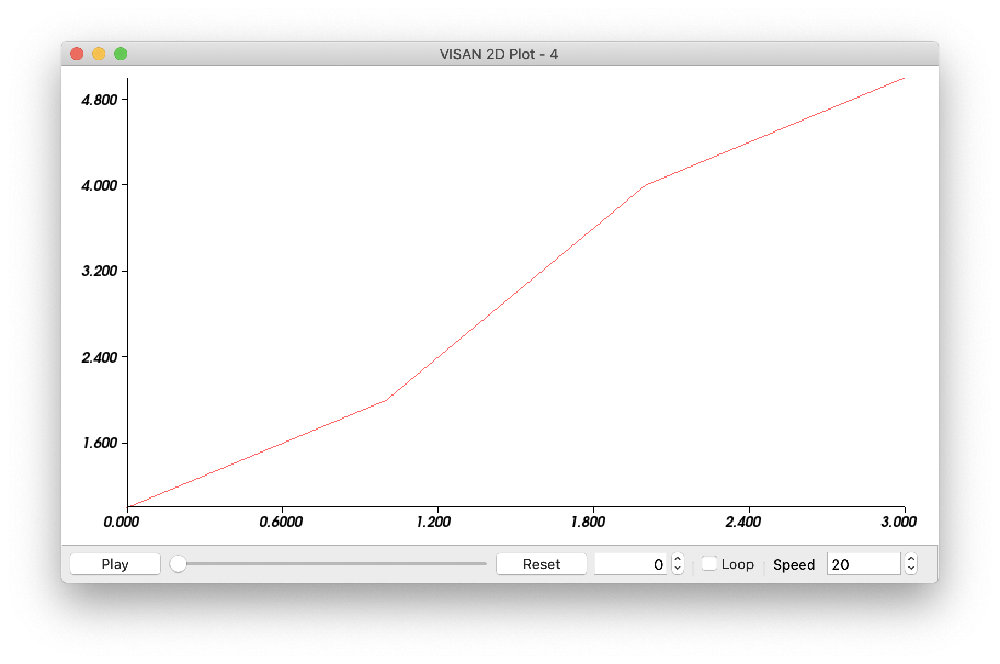Frame 1
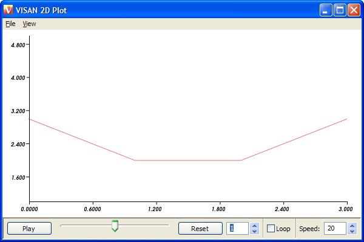
Frame 2
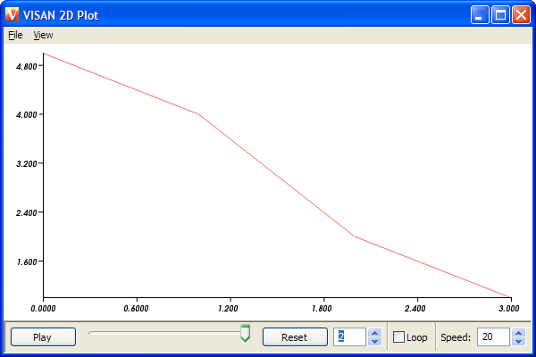
Frame 3
A less trivial example of an animation plot, the plot of a HARP product containing profile data, is shown in the VISAN tutorial.
The controls in the animation largely speak for themselves. From left to right, the 'Animate/Pause' button toggles the animation; the slider can be used to keep track of how far the animation is, or to manually jump further back or forward in the sequence by dragging the slider control; the Reset button sets the current frame to the first one in the sequence, the frame number box can be used to enter and go to a specific frame number (or to move through the frames one by one, by clicking on the arrow controls); the 'Loop' checkbox, if checked, causes the animation to start over at the beginning of the sequence when it the last frame is reached; and the 'Speed' text box can be used to set the frame rate of the animation in frames per second (or to increase/decrease the frame rate by one, by clicking on the arrow controls). The 'Speed' box value only shows the requested frame rate. If the hardware cannot honor that request, the actual frame rate will be lower.
Plot Properties
The property panel is displayed by selecting the item 'Properties' from the 'View' menu, or by adding showpropertypanel=True to the plot() call.
The property panel consists of two tab pages: the dataset properties page and the plot properties page.
On the plot properties page you can set certain global plot properties (i.e. not related to the individual datasets that make up the plot, but only applicable to the plot as a whole) in order to change the appearance of what is shown in the plot area.
Most of the 'plot properties' that can be supplied as keywords to the plot() command can be dynamically modified here, using standard interface elements such as text fields, checkboxes and radio buttons. Changes to values specified in text fields will take effect as soon as you hit <TAB> or <ENTER>. Some text fields will only accept numerical input.
Changing a plot property
Some remarks about specific properties:
The 'Range' property refers to the maximum and minimum values along the X and Y axes that make up the current plot area. Changing the values of these properties allows precision positioning of the viewport over the plot area. Conversely, using the mouse to pan and zoom the plot area will cause the 'Range' values to be updated dynamically.
The 'Nr of Ticks' property is only an indicative value. The underlying algorithm that calculates the label/tick positions can actually produce a different number of axis labels/ticks in order to get better rounded label values.
When specifying plot or axis labels you can use escape sequences, such as '\n' for a line break. A literal backslash can be specified by using a double backslash: '\\'.
Dataset Properties
On the dataset properties page of the property panel, a dataset can be selected from a list of all the datasets currently plotted in the window. The name that a dataset is listed under is either derived from the dataset itself (e.g. in the case of HARP products), or specified using the 'name' option for the plot() function.
A dataset originating from a HARP product can have zero or more attributes. A list of attributes is displayed in the dataset properties page when a dataset is selected. If the plot is being animated, the field values will be updated dynamically as the current animation frame changes.
Exporting Plots
It is possible to save a plot to an image file. The following image types are supported: TIFF, BMP, JPEG, PNG and PNM. The size of the saved image is identical to the size of the plot window shown (i.e. it is similar to a screenshot). Therefore, a larger window implies a larger (higher resolution) image. To save a plot to an image file, use the 'Save Image...' option from the 'File' menu. It is not possible to save an animated plot in VISAN -- the 'Save Image...' option will only save the current frame.
Another possibility is to export the plot (only the current frame) to a file that can be read by the Gnuplot program. The advantage of Gnuplot is that it creates vector images for its plots (whereas VISAN creates bitmap images). By using the PostScript export functionality of Gnuplot you will be able to use a high resolution version of the plot in, for instance, publications.
When you select the 'Export to Gnuplot...' option from the 'File' menu, you will be given the option to chose a file name and directory location for your Gnuplot file. You are advised to give your files the .gp extension, but this is not mandatory. After you have exported your Gnuplot file just run Gnuplot and provide your exported Gnuplot file as an argument. You can also first open Gnuplot and then run the command 'load "<filename>"', where <filename> should be your Gnuplot file. You will then be presented with a plot as it is generated by Gnuplot (this plot may deviate a bit from the one in VISAN depending on the capabilities of both applications).
If you want to save the plot to a PostScript file then run the following commands from within Gnuplot:
gnuplot> set terminal postscript landscape gnuplot> set output "postscriptfile.ps" gnuplot> load "visanexportedfile.gp"
Worldplot Window (wplot)
VISAN opens a worldplot window when a wplot() function call is executed from the Command Line Interpreter or from a script. For example:
>>> product = harp.import_product(GOME_L4_FILE) >>> wplot(product)
will produce a worldplot like:
![[screenshot]](images/wplot-simple.png)
A simple GOME L4 3D worldplot
Each wplot call causes VISAN to plot data containing geolocation information, supplied in parameters to wplot(), onto a worldmap, either in the form of a 2-dimensional projection or using a 3-dimensional globe.
Four types of data can be supplied as argument to wplot:
- User-defined arrays, containing latitude/longitude positions or swath corner coordinates. The first array should contain the latitude values and the second the longitude values.
- HARP products with gridded data, containing one or more maps. Each map consists of a regular latitude/longitude grid of pixels. The value of each pixel will be used as color value.
- HARP products with swath data, containing a series of groundpixels (areas defined by four corner positions). The value of each ground pixel will be used as color value.
- HARP products with latitude/longitude variables for any HARP product containing one dimensional 'latitude' and 'longitude' variables (including e.g. spectral-readout or profile data). Data is shown as points by default. You can make use of the 'drawlocation' and/or 'drawpath' keywords to change this functionality. When locations are plotted, then the points will have a color reflecting the measured value.
Detailed information about the wplot() command and all its parameters is available in the VISAN Reference Manual entry for wplot().
A worldplot window contains a menu bar, a plot panel, an optional color table, an optional animation toolbar, and an optional property panel (consisting of 'Data Sets' and 'Plot' tab panes).
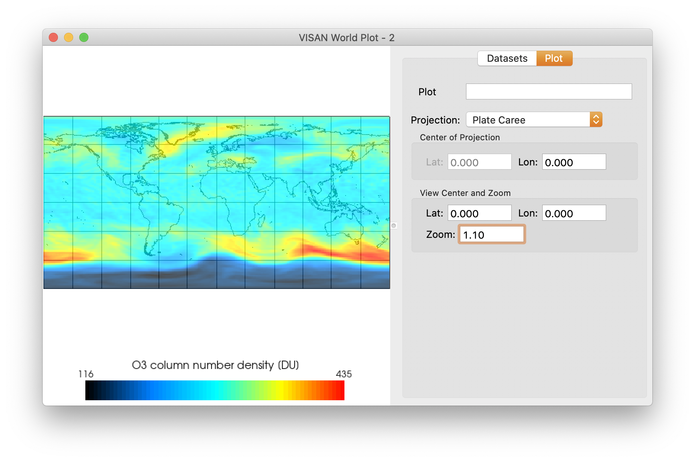A worldplot window with all panels showing
Plot Interaction
If the plot panel is selected (you can select a plot panel by clicking in it with the mouse) you will be able to use mouse actions and key presses to interact with the plot.
The following mouse actions are recognized:
| mouse action | function | description |
|---|---|---|
| left button click-and-drag | pan / rotate | Move the viewport for 2D projections; rotate the earth around its axis for the 3D worldplot. |
| right button click-and-drag | zoom | Zoom in or out, depending on the direction of the mouse movement. |
| middle button click-and-drag | outline zoom / pan | For 2D projections, select a rectangular area and upon mouse button release zoom in on that rectangle; For the 3D worldplot, tilt the earth axis. |
The following key presses are active:
| key binding | function | description |
|---|---|---|
| r/R | reset | Reset the pan and zoom values so that the entire scene is visible. |
| w/W | wireframe mode | For the 3D worldplot, modify the rendering so that it shows a wireframe of all visible elements. This key has no effect for the 2D projections. |
| s/S | surfaces mode | For the 3D worldplot, modify the rendering so that surfaces are shown (this is the default). Has no effect for the 2D projections. |
| j/J | 'joystick' mode | For the 3D worldplot, change to a mode in which the magnitude of the mouse motion is proportional to the zoom/pan motion. For example, small left-button motions cause small changes in the earth rotation. This key has no effect for the 2D projections. |
| t/T | 'trackball' mode | For the 3D worldplot, change to a mode in which the position of the mouse relative to the center of the scene determines the speed at which the camera moves, and the speed of the mouse movement determines the acceleration of the camera, so the camera continues to move even if the mouse if not moving. Has no effect for the 2D projections. |
| space | start/stop animation | For an animation plot, this will start or stop the animation along the frame dimension. |
Animation Plots
Similar to 2D plots, a worldplot window has the possibility to plot sequences of geolocation date (signifying, for instance, samples along a time dimension). It is then possible to have the plot window animate the plot by showing the different frames in succession.
An animation plot is created when a wplot() command is supplied with Geomap data. The 'maps' dimension will be used as the frame dimension.
The animation toolbar has exactly the same functionality as the one used in the 2D plot.
Height Maps
One of the features of wplot() is the possibility to use the values of a Geomap as a heightmap, using the heightfactor keyword. This produces a clear visualization for even the smallest changes in values. For example:
>>> wplot(product, heightfactor=0.3)
A world-plot using a heightmap
Projections
If you want to plot data onto a 2-dimensional worldmap using wplot(), you can specify the type of projection VISAN should use for the mapping of the world globe onto the two-dimension plane.
VISAN supports the following projections:
- Plate Caree
- Robinson
- Mollweide
- Lambert Cylindrical
- Lambert Azimuthal
- Azimuthal Equidistant
- 3D
A projection can be specified by using the projection keyword in the wplot() call, for example:
>>> product = harp.import_product(GOME_L4_FILE) >>> wplot(product, projection="lambert cylindrical")
You can, however, also specify the required projection using the worldplot property panel.
Worldplot Properties
The worldplot property panel is displayed by selecting the item 'Properties' from the 'View' menu, or by adding showpropertypanel=True to the wplot() call.
The property panel consists of two tab pages: the dataset properties page and the plot properties page.
On the plot properties page, it is possible to dynamically select the type of projection. For the 2D projections you can set the 'center point' of the projection. This is the (latitude, longitude) coordinate pair that the projection will be centered on. For Azimuthal projections you can specify both the latitude and longitude position of the center point, and for Cylindrical projections only the longitude position.
The View Center and Zoom section provides fields to zoom into a specific area of interest. The View Center lat/lon values provide the center point where the plot should zoom into and the Zoom field provides a zoom factor (>= 1.0). You can also set these values using the centerlat, centerlon, and zoom parameters of wplot().
Dataset Properties
On the dataset properties page of the property panel, a dataset can be selected from a list of all the datasets currently plotted in the window. The name that a dataset is listed under is either derived from the dataset itself (e.g. in the case of HARP products), or specified using the 'name' option for the plot() function.
A dataset originating from a HARP product can have zero or more attributes. A list of attributes is displayed in the dataset properties page when a dataset is selected. If the plot is being animated, the field values will be updated dynamically as the current animation frame changes.
The dataset properties also contains a sub page for modifying the Color Table associated with the selected data set (see Color Table) and a page for modifying the Color Bar properties (such as title, number of labels displayed, and minimum and maximum values for the color table range).
Color Bar
If the plot in question has a sensible color lookup table associated with it, the color lookup table will also be shown in a color bar along the bottom of the plot area. The visibility of the colorbar can be toggled on and off by using the 'Color Bar' item from the 'View' menu.
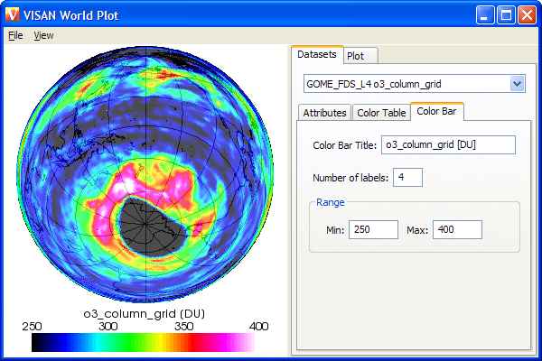Altering the current colortable: Setting a small range to create high contrast and setting number of labels (above the colorbar) to 4
Color Table
Color tables can be used to bind colors to specific values when showing a Worldplot for swath or grid data from a HARP product. There are 2 types of color tables: predefined and custom. To modify a specific color table for a Worldplot you select the Color Table subpage of the dataset properties page. You can then choose or make the Color Table you want.
VISAN supports the following predefined Color Tables:
- Default (all black)
- BlackToWhite
- WhiteToBlack
- GreenToGreen
- RedToGreen
- Cloud (a grayscale spectrum with decreasing transparency)
- Rainbow (red - orange - yellow - green - blue - magenta)
- Ozone (black - blue - cyan - green - yellow - red - magenta - white)
- Blackbody (black - red - yellow - white)
- Aerosol (black - blue - cyan - yellow - red)
Selecting the Blackbody colortable
You can customize a color table by selecting a specific color point using the 'Gradient Edge Point' drop down list and than modifying the R, G, B, and A sliders to modify the red, green, blue, and alpha (transparency) values. The X slider lets you move the position of a color point relatively to its previous and next color points. You can add new color points and remove selected color points using the 'Add Point' and 'Remove Point' buttons.
By default, any change you make to the color table is directly applied to the dataset in the plot window. When refreshing the plot window takes too long, you can temporarily disable this updating by togling the 'Live update' checkbox at the bottom of the Color Table subpage. Enabling this checkbox again or clicking once with the mouse in the plotwindow will apply the changes you made to the color table to the data set again.
Overlay Plots
The wplot() function allows you to plot several data sets in one plot (similar to the plot() function). Consecutive data sets are plotted on top of each other producing a so-called 'overlay plot'. The overlay property can be very usefull if, for instance, you want to add cloud information on top of your total ozone column data. For example, in a GOME Level 2 product, you can find both total ozone column data and cloud fraction data. To ingest this data you would perform something like:
>>> data = harp.import_product(<GOME L2 files>,
'scan_direction=forward, include=cloud_fraction')
You can plot the ozone and cloud data individually using:
>>> wplot(data, colortable="Ozone", colorrange=(150.0, 450.0), value='o3_column') >>> wplot(data, colortable="Cloud", colorrange=(0.0, 1.0), value='cloud_fraction')
If you look at the cloud fraction plot, you will see that the "cloud" color table uses a high level of transparency in areas with a low cloud fraction and a medium transparency and grey color in cloudy areas. Such a color table is very suitable for overlay plots, since it will not hide the colors of the data below. We can combine the two data sets in one plot using the following simple procedure:
>>> w = wplot(data, colortable="Ozone", colorrange=(150.0, 450.0), value='o3_column')
>>> wplot(data, colortable="Cloud", colorrange=(0.0, 1.0), value='cloud_fraction',
deltaradius=0.02, window=w)
We supply a deltaradius parameter in order to have the cloud data show up a bit further away from the globe in the 3D projection of the worldplot (by default data sets are plotted with a delta radius of 0.007, which means that the distance between the data set and the sphere representing the world is 0.007 times the radius of the sphere).
It is important to note that the colortable that is plotted below a worldplot (and that can be changed with the color table editor) is the colortable of the data set that is selected in the dataset properties page.
Exporting Worldplots
It is possible to save a plot to an image file. The following image types are supported: TIFF, BMP, JPEG, PNG and PNM. The size of the saved image is identical to the size of the plot window shown (i.e. it is similar to a screenshot). Therefore, a larger window implies a larger (higher resolution) image. To save a plot to an image file, use the 'Save Image...' option from the 'File' menu. It is not possible to save an animated plot in VISAN -- the 'Save Image...' option will only save the current frame. If available and shown, the color bar and the measurement date and time will be included in the saved file.